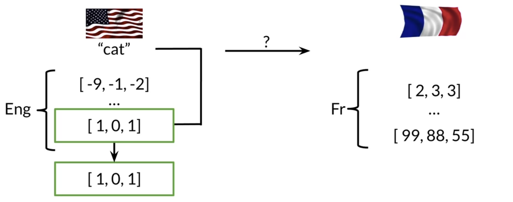
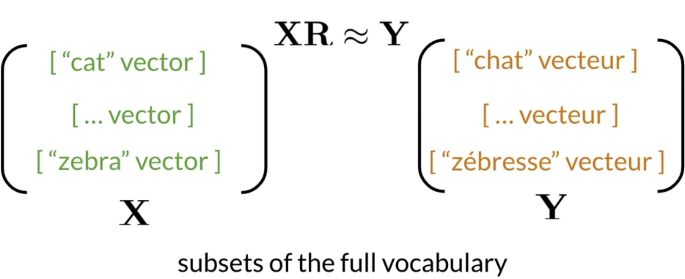
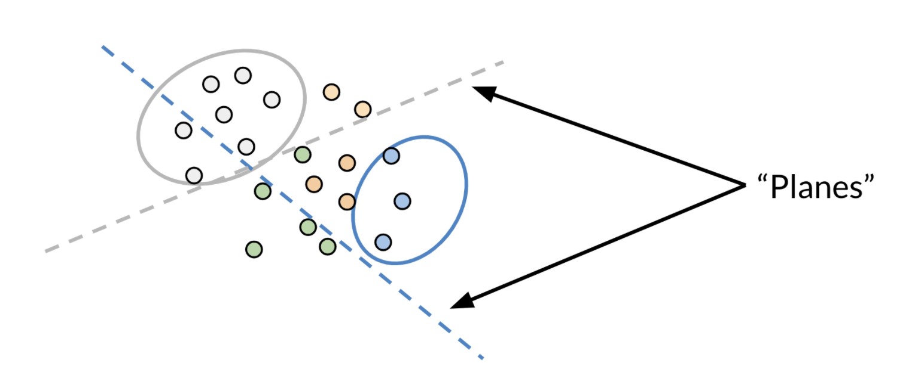
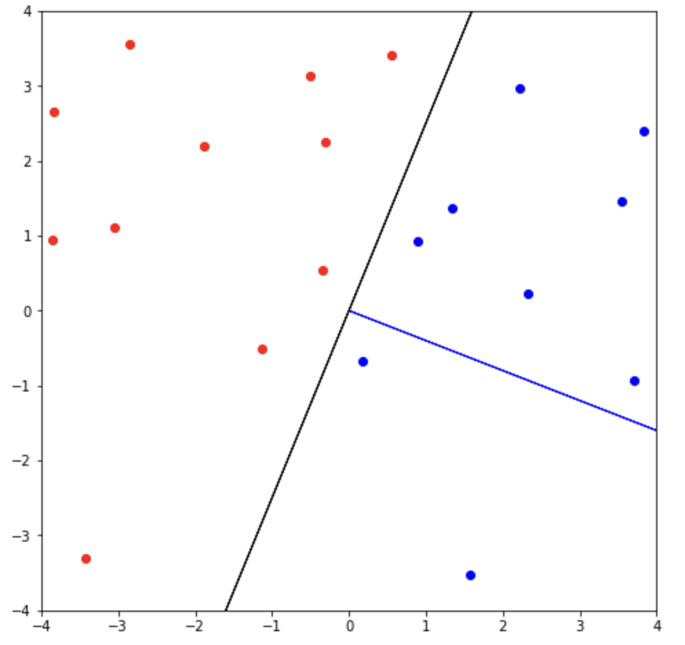

Introduction to Machine Translation in NLP

Imagine yourself in 1800s and you plan a travel to France being a native english speaker. It would have been nearly impossible to communicate with native French speaking community. But now the world of impossibilities has been simplified with the technologies and research that have gained pace in the past couple of decades. Natural Language Processing is a subfield of AI and Linguistic that deals machine interaction with human language.
Machine Translation(MT) is one of the many applications of NLP. It is automatically translates one language to others using some algorithms under the hood. We will see them shortly. In the early days of NLP, engineers used to hard code the translation into dictionary using key-value pairs and then they used to follow certain rules for translating source languages to their respective counterpart. They were know as Rule-based Machine Translation(RBMT). But they could only handle a limited amount of word pairs into databases. Also increaing those limits used to come at the cost of time and money. Then came the probablistic models also known as Statistical Machine Translation(SMT) that were more flexible in learning and translating languages and were based on bilingual text corpora. it was first introduced in 1955 but only gained recognitition after the establishment of IBM watson resarch center. I will cover more about SMT in another blog. By the end of 2010, researchers became more interested in deep learning techniques and high quality translation became seemingly possible due to availabiltiy of cost-friendly computaional resources (GPUs). Though deep learning appeared first in speech recognition in 1990s but the first paper on Neural Machine Translation(NMT) was published in 2014. After that focus of researchers shifted comletely towards NMT as they were producing high quality translation and multi-lingual translation also became possible after the arrival of NMT.
In this post, I will mainly be covering about how one can approach a machine translation in terms of basic machine learning algorithms. Let’s see how it works.
How Machine Translation works?
Now imagine that you are planning a travel to France and you don’t want to spend money on hiring local guides to take you around (let’s keep the smartphone out of context for now). So you came up with an idea to build your own machine translation device. It might seem impossible to think at first but right there, I came as a saviour and asked you to follow my words carefully (Attention Is All You Need right now).
Let’s begin our basic MT building journey with an understanding of how you should approach it.

In the above picture, you can see that how a english word cat can be translated to its french equivalent chat. In the left-hand side of the image, words are represented as numbers called as vectors. These vectors have a special name in NLP that in word-embeddings. Words can be translated into their lower dimensional vector representation using number of techniques like word2vec , Latent Semantic Analysis encoding, TF-IDF encoding etc. Right-hand side of the image represents the french words embeddings.
In eng-french context, Machine translation finds a similar french word embedding corresponding to each word embedding in English language.
It means that to find a french translation of word cat in English, If you are able to find a vector ( among French word embeddings) similar to cat’s embeddings, then that embedding would correspond to word chat in French. But the question arises, how to find similar french embeddings for english words? Well, from here, we will proceed mathematically. Let’s our problem statement speak the language of typical Machine Learning.
Let $X$ be a row vector represention of English words and $Y$ be its french counterpart row vector representation. Then MT problem tries to find a transformation matrix $R$ that satisfies the following equation. $$ XR ≈ Y $$ There are still couple of questions to be answered. They are as under.
- How do you find transformation matrix $R$ ?
- What does similarity of word-embeddings of English language wrt. French word mean?
Well, I will be answering these questions one by one in subsequent paragraphs.
How to find transformation matrix R?
It can be answered in terms of optimization problem. Select a random matrix R (just like weight initialization in neural networks) and then try to minimise the distance between $XR$ and $Y$ (Both $X$ and $Y$ are row vectors), as simple as that. Now is the time to define our optimzation problem mathematically.

It might come to your mind that why do you need to represent word vectors in terms of matrix even though it is possible to store them using dictionary as key-value pair. Well, you are right but how about any unseen word that is not a key of the french-english dictionary. One of the solution is to find a robust model that can also work for unseen word. Now you know why do we need a matrix representation and their transformation matrix. We only need to train our MT model on subset of English-french word dictionary and our model can easily predict the corresponding french equivalent for an unseen english word.
MT as an Optimization problem:
Find a transformation matrix $R$ that minimises the following equation. $$ \arg \min _{\mathbf{R}}||\mathbf{XR}- \mathbf{Y}||_F \tag{1} $$ Usually the loss fucntion is the squared Frobenius norm of equation (1) as it becomes quite handy while calculating gradient.
Loss Function:
$$ L = ||Y-XR||_F^2 $$
where $F$ is the frobenius norm of $L$. So our loss function is the square of frobenius norm of L (difference between French equivalent matrix $Y$ and $XR$).
Gradient computation wrt. Transformation R
We can use gradient descent to minimise the loss matix L. Let’s see how can we do that. $$ \begin{align*}Loss(L) = ||Y-XR||_F^2 \newline \newline \frac{dL}{dR} = \frac{2}{m}(X^T(XR-Y))\end{align*} $$
Remember that the transformed vector $Ỹ$ wont be necessarily similar to $Y$. Therefore we need to find the closest match of $Ỹ$ in $Y$. That can be achieved using k-nearest neighbour. Naive k-nearest neighbour is time consuming as it computes the similarity score with respect to every word vectors in $Y$. So Instead of naive KNN, we will use nearest neigbour approximation using Locality Sensitivity Hashing. Everything so far so good, but how does LSH works?
Locality Sensitivity Hashing
It is a hashing method based on the location of words in vector space. It is used to reduce the cost of naive KNN in higher dimensios. To understand Locality Sensitivity Hashing, you need to know about Hashing data structure. You can refer to this post to learn more about hashing. Assuming that you already know hashing, let’s see how LSH works.
LSH buckets the similar vector in high dimension with high probability. LSH works slightly different than normal hashing.

In the above figure we can see that we LSH tries to find the plane that separates the nearest vecrors from the distant vectors.
Workig of LSH:
-
It first find the separating hyperplane that groups similar word in vector space.
-
given the equation of plane $P$ , find the sign of word vctor $V$ using dot product $$ sign = sgn(||P.V^T||) $$ where $sgn$ is signum function. if sign is 1, vector lies above the plane and it’s dot product indicates the projection of vector $V$ on the plane on positive side (above the plane). if the sign is -1, vector lies below the plane and if the sign is 0, given word vector $V$ lies on the plane $P$. It might sound little confusing. Let’s see these concepts with a diagram.

In the given image, blue line represents the vector $P$ normal to the separating plane (in black). Blue points represent those vector thta lies above the plane (in black, $PV_i^T$ > 0) and those in red lie below the plane (dot product wth respect to normal vector(blue line) is negative).
We can combine multiple such planes in one hash fucntion using multiplane hashing heuristic as given below.
for a given plane $p_i $ and word vector $v_i$, heuristic $h_i$ is given as $$ \begin{align*} h_i:= \begin{cases} sgn(p_iv_i^T) & \text{if }p_iv_i^T > 0,\newline 1+sgn(p_iv_i^T) & \text{if }p_i{v_i}^T > 0. \end{cases} \end{align*} $$
-
Find the hash value using hash function as under. $$ hashvalue = Σ_i^H 2^ih_i $$
The idea behind the locality sensitivity hashing is to divide the vector space into multiple regions and then select the approximate(friendly) nearest neighbours of $Ỹ$ in $Y$ . This process of approximate k-nearest neighbours is faster than the naive KNN as the latter is more time and memory consuming. A-KNN(approximate k-nearest neighbour) does not give you the fullest nearest neighbour. it usuallly trades off accuracy over efficiency. ppAroxiumate nearest neighbours can also be used for document searching.
You can use cosine similarity score to compute the nearest neighbours. Cosine similarity score is given by $$ \cos(u,v)=\frac{u\cdot v}{\left|u\right|\left|v\right|} $$
- if cos(u,v) = 1, then u,v lies on the same side.
- if cos(u, v) = -1, then u,v lies on the opposite side.
- if cos(u,v) = 0, them u,v lies on the same plane.
Summarising everything, we first find the word embeddings for English-french dictionary. Once we have the embeddings for every word, we find a transformation matrix that minimises the frobenius norm of $||XR-Y||$. Then we find the nearest vector $v_i$ in $Y$ That is near to $XR$ using LSH . We use LSH for faster nearest neighbor approximation. That’s all for now.
Attention Is All You Need in bold letter changed the face of NLP. Do chekout the paper.
Stay tuned for more interesting blogs about NLP.
Happy Learning…📚📖🙇
References
- image credits: Natural Language processing with classification and vector space coursera course. (Please do checkout the coursera course for in-depth intuition)
- cover image: https://www.pexels.com